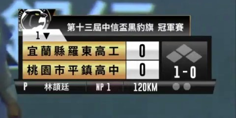

The idea
One broadcast video in.
One row per pitch out.
Pitch count and speed from the scorebug, the pitcher's body at release from the centre-field camera, and each pitch's result from open play-by-play.

Broadcast frame

Scorebug: count, pitch count, speed

Pose at the release frame
PSA · 03